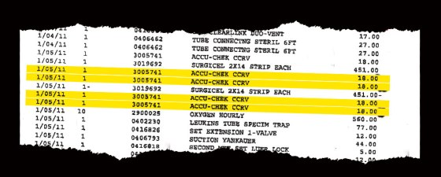
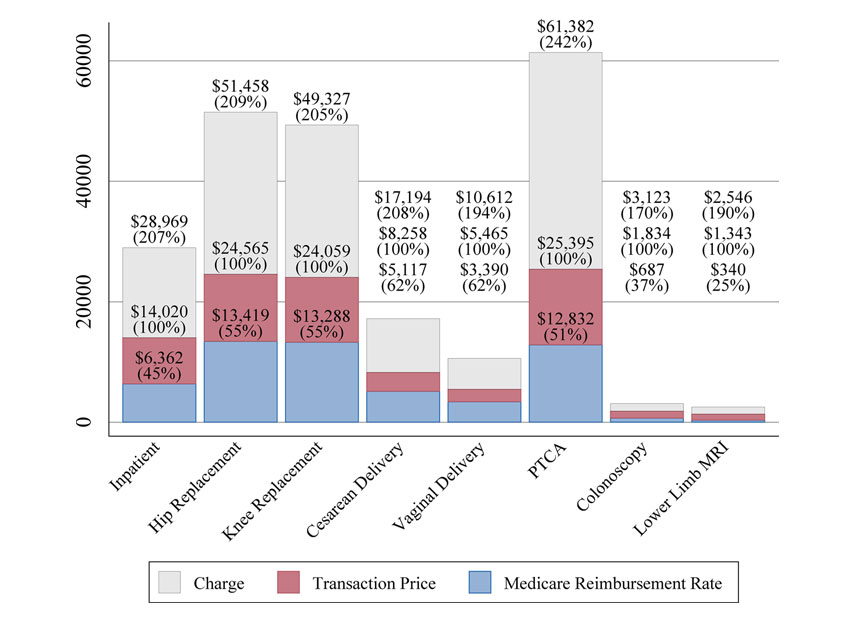
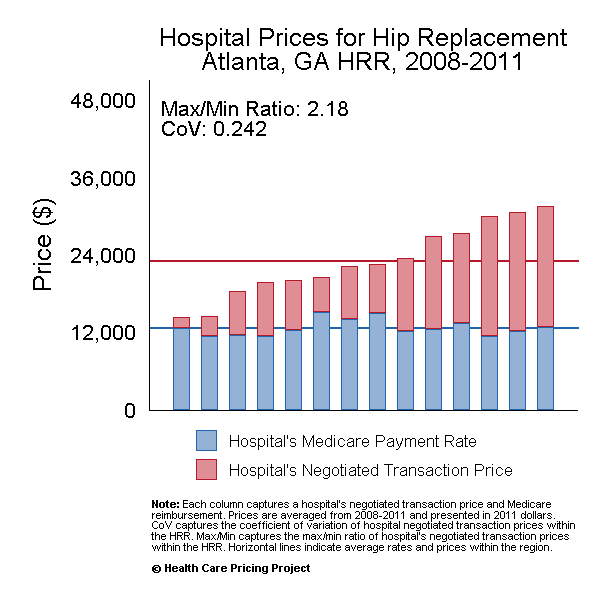
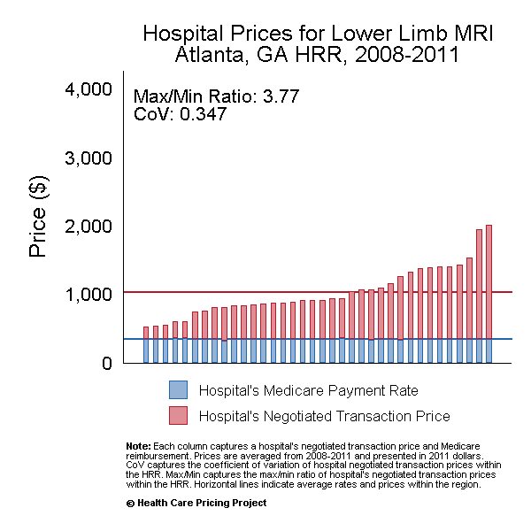

ECON 372 · Economics of Health Care Markets
Emory University
Before 1900: Just don’t go to the hospital! (at least in the U.S.)
Early 1900s: big safety and technological improvements
Mid 1900s: huge growth, especially in wealthy and urban areas
In practice, it’s a negotiation with insurers
Defining characteristic of hospital prices and services: it’s complicated!

Lots of different payers paying lots of different prices:
Price \(\neq\) charge \(\neq\) cost \(\neq\) patient out-of-pocket spending

Fee-for-service
Capitation
We’ll get into the real data later in this module, but for now…a few facts:
Hospital services are expensive and vary across/within areas
Hospital markets are NOT competitive
Hospital prices are NOT transparent

